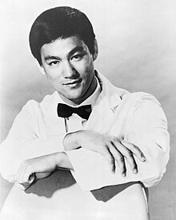

Bruce Lee[b] (born Lee Jun-fan;[c] November 27, 1940 – July 20, 1973) was a Hong Kong-American martial artist, actor, filmmaker, and philosopher. He was the founder of Jeet Kune Do, a hybrid martial arts philosophy which was formed from Lee's experiences in unarmed fighting and self-defense—as well as eclectic, Zen Buddhist and Taoist philosophies—as a new school of martial arts thought.[3][4] With a film career spanning Hong Kong and the United States,[5][6][7] Li is regarded as the first global Chinese film star and one of the most influential martial artists in the history of cinema.[8] Known for his roles in five feature-length martial arts films, Lee is credited with helping popularize martial arts films in the 1970s and promoting Hong Kong action cinema.[9][10]

Born in San Francisco and raised in British Hong Kong, Lee was introduced to the Hong Kong film industry as a child actor by his father.[11] His early martial arts experience included Wing Chun (trained under Ip Man), tai chi, boxing (winning a Hong Kong boxing tournament), and frequent street fighting (neighborhood and rooftop fights). In 1959, Lee moved to Seattle, where he enrolled at the University of Washington in 1961.[12] It was during this time in the United States that he began considering making money by teaching martial arts, even though he aspired to have a career in acting. He opened his first martial arts school, operated out of his home in Seattle. After later adding a second school in Oakland, California, he once drew significant attention at the 1964 Long Beach International Karate Championships of California by making demonstrations and speaking. He subsequently moved to Los Angeles to teach, where his students included Chuck Norris, Sharon Tate, and Kareem Abdul-Jabbar.